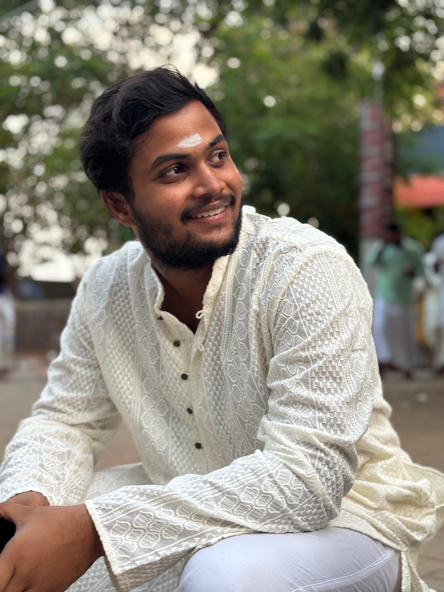

I'm Aneesh Reddy, a curious and determined learner who thrives on building projects that solve real problems. I value freedom, independence, and responsibility, having learned to manage both in college after spending years in a strict environment. I'm the type of person who knows my potential and pushes myself to improve, even when I feel lazy or distracted.
I enjoy coding, problem-solving, and experimenting with ideas. Beyond technology, I care deeply about human connections, friendships, and family, and I try to bring empathy and thoughtfulness into everything I do.
I am constantly evolving, learning new skills, taking on challenges, and striving to turn my ideas into meaningful solutions.

Computer Science undergraduate at IIITDM Kancheepuram with strong foundations in data structures, algorithms, systems programming, and backend development. My recent work spans machine learning, data analysis, and software projects built for practical use.
IIITDM Kancheepuram
M.Tech + B.Tech (Integrated) in Computer Science and Engineering
Aug 2023 - June 2028
CGPA: 7.86
Machine Learning Research Intern
Under Dr. Noor Mahammad SK
June 2025 - July 2025